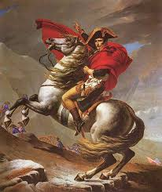
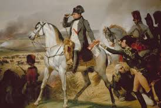
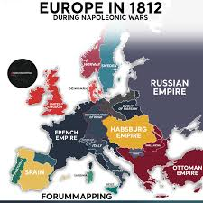

Napoleonske vojne so trajale 13 let od 1803 do 1815
med evropskimi koalicijami, ki so se bojevali proti
prvi francoski republiki (1803-1804) in prvem Francoskem cesarstvu (1804-1815).
Prva faza vojne je izbruhnila, ko je Britanija 18. maja 1803 napovedala vojno Franciji. Po nekaj manjših kampanjah se je Britanija povezala z Avstrijo , Rusijo in več manjšimi silami ter aprila 1805 oblikovala Tretjo koalicijo. Napoleon je v poznejši vojni premagal zavezniški rusko - avstrijski vojski, ki je dosegla vrhunec s francoskimi zmagami pri Ulmu in Austerlitzu , kar je privedlo do razpada Svetega rimskega cesarstva in Avstrija je bila prisiljena skleniti mir do konca leta. Britanija in Rusija sta ostali v vojni s Francijo. Prusija , zaskrbljena zaradi naraščajoče francoske moči, se je pridružila Britaniji in Rusiji v Četrti koaliciji, ki je oktobra 1806 nadaljevala vojno. Napoleon je premagal Pruse pri Jeni-Auerstedtu in Ruse pri Friedlandu , kar je do julija 1807 na celino prineslo nelagoden mir in Britanijo spet pustilo kot edinega glavnega sovražnika Francije. Britanija ni mogla oporekati francoski prevladi na celini, vendar je po vrsti zmag, vključno s Trafalgarsko bitko , dobila hegemonijo na morjih . Rusija je začasni mir izkoristila za rešitev vojn z Osmani , Švedi in Iranci.


